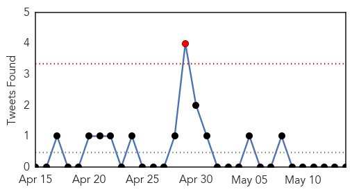

30 Day Trends
Web: 0 alerts, 0 warnings
Twitter: 1 alerts, 0 warnings
Top Articles:
- 0.976
- Lyme disease: Doctors advise against long-term antibiotic treatment Republican American
- 0.930
- New app warns UK holidaymakers over disease-carrying tick hotspots
- 0.917
- Chicago Tribune
- 0.917
- Chicago Tribune
- 0.917
- Chicago Tribune
- 0.917
- Chicago Tribune
- 0.917
- Chicago Tribune
- 0.917
- Chicago Tribune
- 0.917
- Chicago Tribune
- 0.917
- Chicago Tribune
- 0.917
- Chicago Tribune
- 0.917
- Chicago Tribune
- 0.917
- Chicago Tribune
- 0.917
- Chicago Tribune
- 0.917
- Chicago Tribune
- 0.917
- Chicago Tribune
- 0.917
- Chicago Tribune
- 0.917
- Chicago Tribune
- 0.917
- Chicago Tribune
- 0.917
- Chicago Tribune
- 0.917
- Chicago Tribune
- 0.914
- Stomach Bug Traced to Swimming in Contaminated Lake Water
- 0.894
- Norovirus Outbreak Associated with a Natural Lake Used for Recreation — Oregon, 2014
- 0.873
- Lead Poisoning Kills 28 Children in Niger, Articles
- 0.849
- A common hospital soap may reduce MRSA spread
- 0.832
- More cases of vesicular stomatitis in Arizona horses
- 0.827
- Space agency joins fight against tick disease menace in Highlands
- 0.826
- Keeping a Beach Trip from Going South
- 0.821
- HUS Strikes 3 Children in Whatcom County, WA
- 0.817
- Lyme awareness grows as Manitoba government warns of tick risks - Winnipeg
- 0.815
- The World Bank Group and PLOS Neglected Tropical Diseases launch APOC collection
- 0.812
- Outbreak of Hoof-and-Mouth Disease Kills Livestock in Laos
- 0.809
- 14 tuberculosis cases in Nain a 'significant concern' in wake of death
- 0.808
- West Texas News
- 0.782
- Outbreak of Hoof-and-Mouth Disease Kills Livestock in Laos
- 0.763
- Food-borne infections killed hundreds, hospitalized thousands last year
- 0.752
- 28 Children Die From Lead Poisoning In Niger
- 0.752
- Lakes Harbor Norovirus
- 0.726
- Shs749m water and sanitation project commissioned in Kawempe
- 0.724
- Findings reveal clues to functioning of mysterious 'mimivirus'
- 0.708
- Nigria: Lead poising claims 28 lives in Niger State
- 0.700
- Findings reveal clues to functioning of mysterious 'mimivirus'
- 0.695
- Drought hit SADC not alive to climate change
- 0.691
- Fewer Americans getting sick from E.coli
- 0.679
- Lead poisoning: '65 cases, 28 deaths reported in Niger'
- 0.662
- International teams offer health services to 13,098 people
- 0.604
- Fighting rages in Burundi day after attempted coup
- 0.604
- Islamic State militants close in on Syria's historic Palmyra
- 0.604
- Games of thrones, road warriors and badass Aussies jolt Cannes festival
- 0.604
- Burundi president loyalists claim control
Showing top 50 articles...
Top Tweets:
-
No tweets found for May 14, 2015
Web/News Articles

Tweets
Article Locations